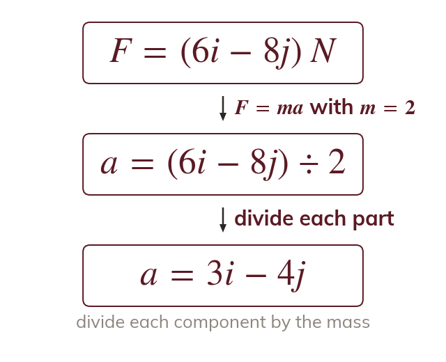
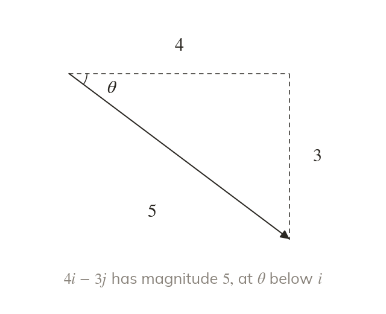
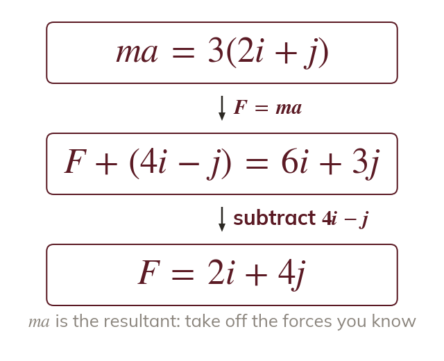
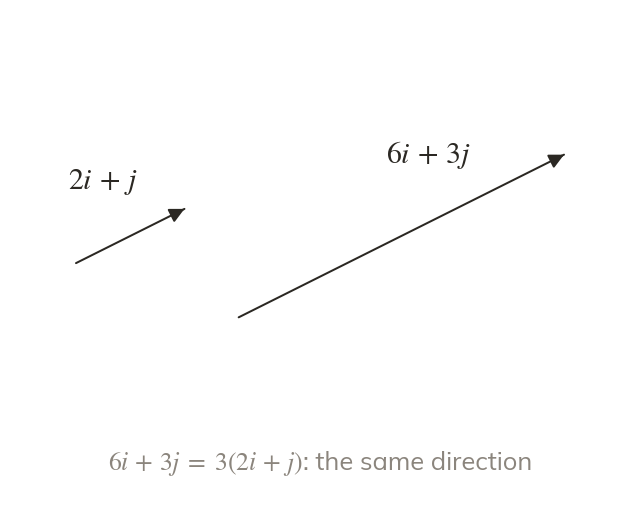

works with vectors
With forces in i, j form, is a vector equation: each component of the resultant is divided by the mass. The acceleration points the same way as the resultant force.
Forces in a real problem rarely line up: a boat is pushed by its engine, the wind and the current at once. Writing in i, j form finds the acceleration of anything moving in a plane, and the next lessons use the same law on bodies that are joined together.
Work down the page at your own pace. Write every answer in your book first, then click to check it.
Read each card, then follow the worked examples one step at a time.

With forces in i, j form, is a vector equation: each component of the resultant is divided by the mass. The acceleration points the same way as the resultant force.

The magnitude of the acceleration comes from its components by Pythagoras, and its direction from the tangent of the angle. A sketch shows whether the angle is above or below i.
Pick an answer. If it's wrong, the feedback tells you which mistake it was.
Read each card, then follow the worked examples one step at a time.

When the acceleration is known, ma gives the resultant force. Subtracting the known forces leaves the unknown one.

If a body accelerates parallel to a vector, its resultant force is a multiple λ of that vector. Comparing the i and j components finds λ and the unknown.
Pick an answer. If it's wrong, the feedback tells you which mistake it was.
Finished? Next lesson: M10.5a Connected Particles.
For each skill, tap the one that is true for you today. Your Revise pages start with anything you mark Not yet.
Your ratings are saved on this device only.
Log in, then search for a code to practise that skill.